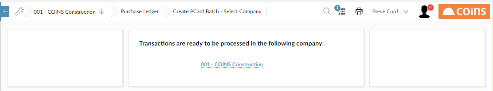
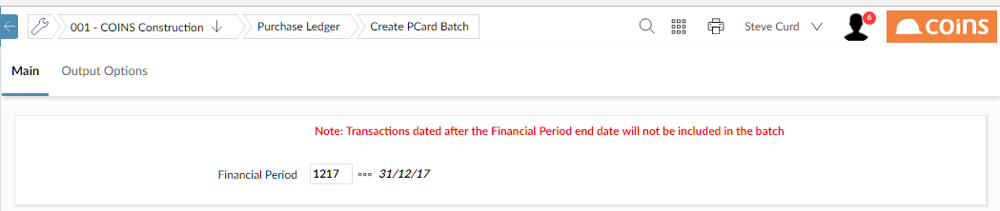

To create a PCard transaction batch:
- Go to PCards Workbench - Administrator Mode.
- From the Options menu, choose Create PCard Batch - Select

- Click the link on one of the
If more than one

- Enter the
- Click
 .
.
To post PCard batches:
- Go to PCard Transactions.
-
- From the Choose Action menu, select Post Batches and click
 .
.
For each PCard batch,
- a batch of
- a PCard payment batch (Batch Type PLPPAY) which marks the transactions as paid.